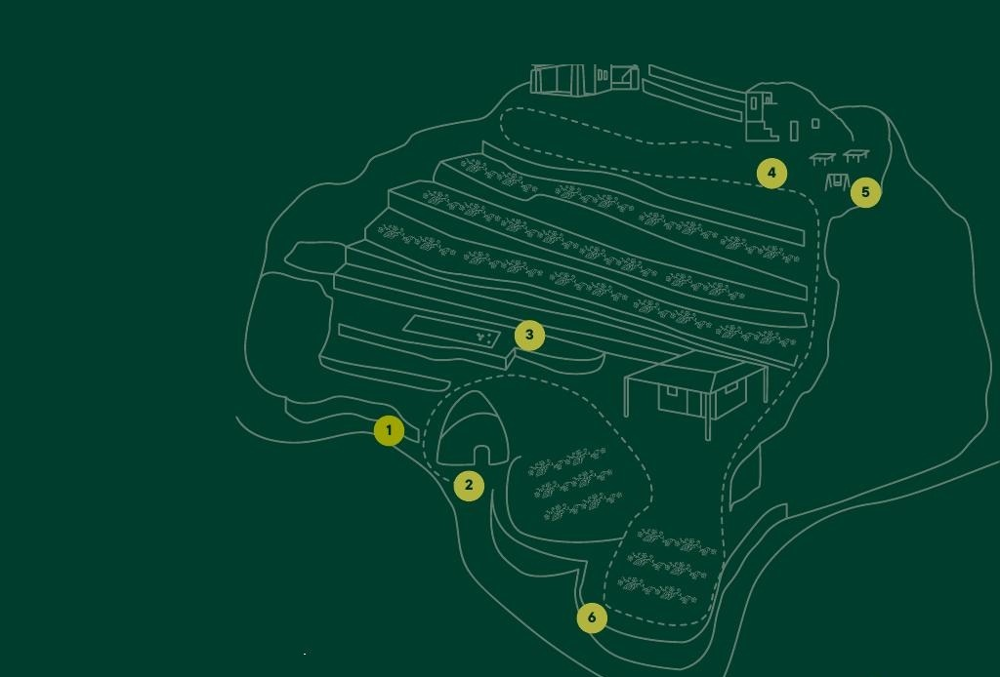

Clicca sui numeri della mappa per scoprire ogni angolo di Fiorola.

Tocca un numero sulla mappa per saperne di più
L'ingresso al vigneto eroico di Fiorola, tra le antiche parracine di tufo verde restaurate nell'ambito del progetto PNRR.